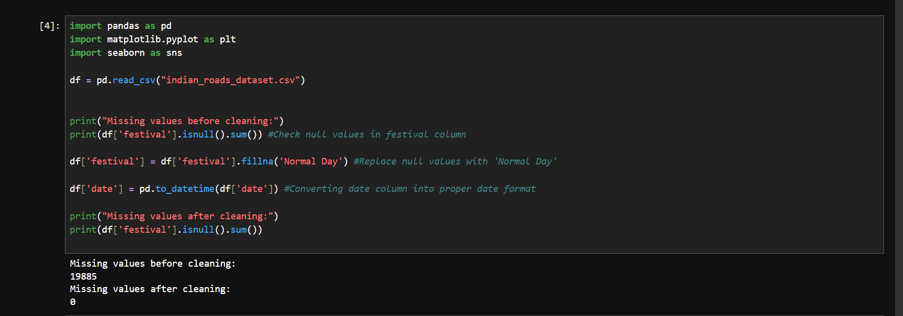
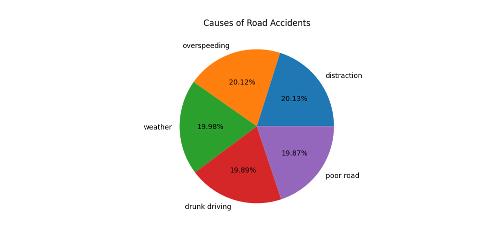
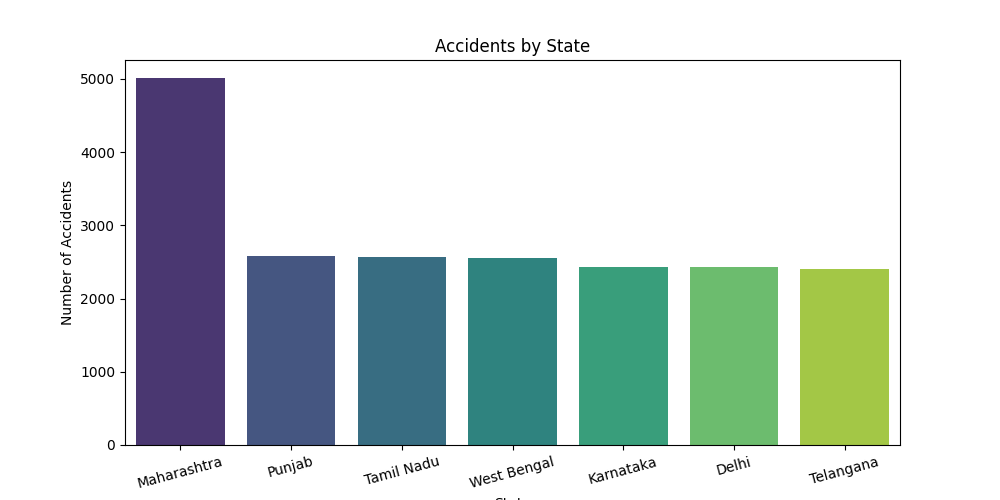
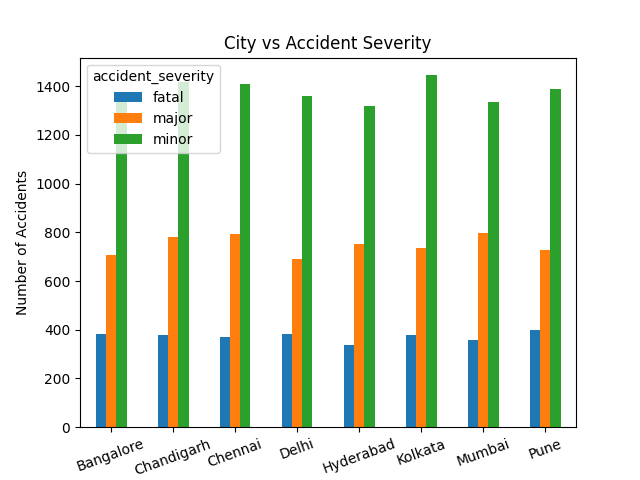
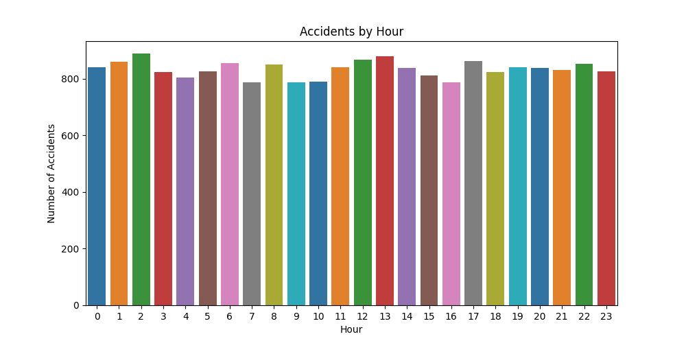
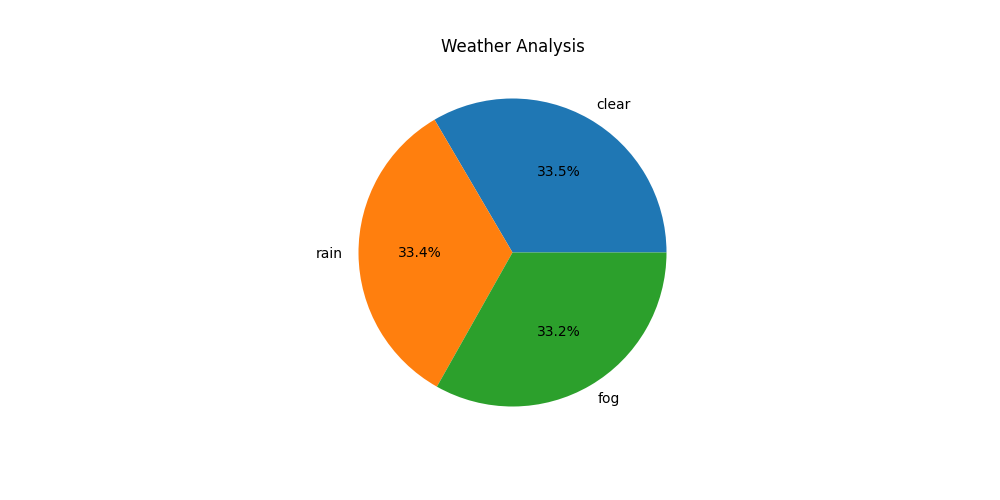
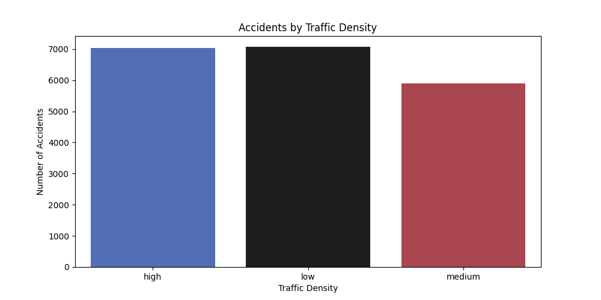

This Road Accident Analysis project is based on a dataset obtained from Kaggle. The dataset contains 20,000 road accident records collected from different Indian states and cities between 2022 and 2025.
Using Python, Pandas, Matplotlib, and Seaborn, the data was cleaned, analyzed, and visualized to identify accident patterns, high-risk cities, peak accident hours, and major causes contributing to road accidents.
Dataset File: Download CSV File
Before analysis, missing values in the festival column were replaced with "Normal Day" and the date column was converted into a proper DateTime format for easier processing.







Dataset Source: Kaggle Traffic Accident Dataset
Tools Used: Python, Pandas, Matplotlib, Seaborn, HTML, CSS